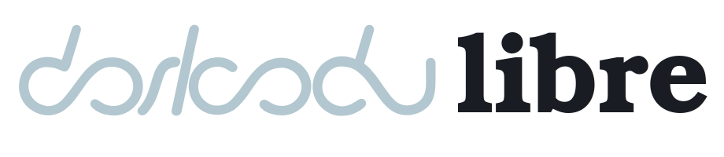
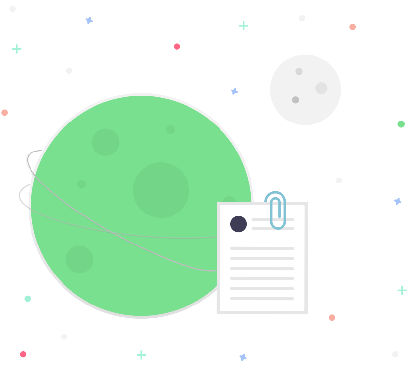
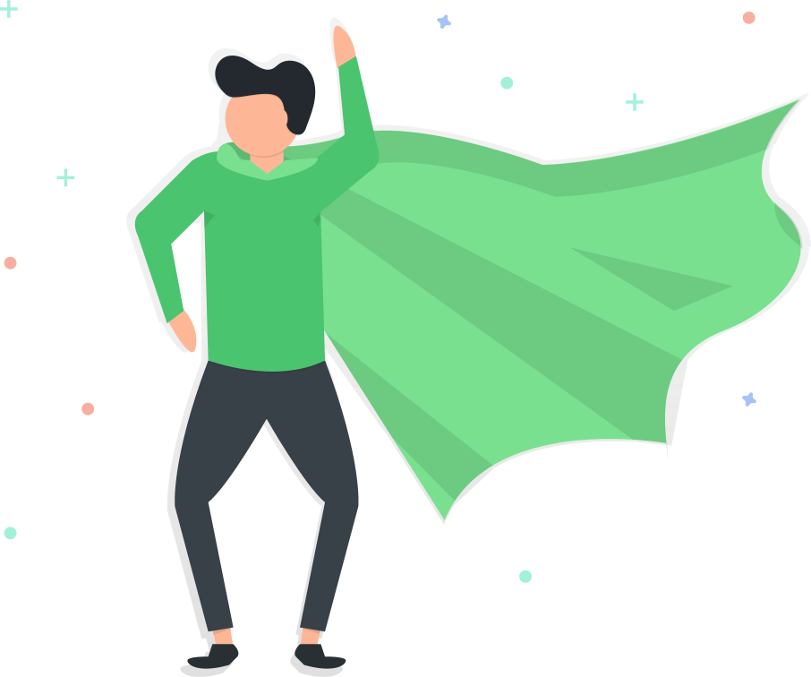

-
Wanderlyf
The Social Knowledge Network
-

Dorkodu Libre
Open Source @ Dorkodu
About
We are Dorkodu.
Dorkodu is defined by our unique culture. We value feelings, thoughts and knowledge. We encourage everyone to be authentic, because this helps great things happen!

"the Universal Knowledge"
Our Mission
Liberate the human knowledge; make it open, useful and meaningful for everyone.
Wisdom is the real source of power. This is why we set our ambitious goals to purify and liberate the knowledge, feelings and thoughts of humanity. We know this is the only way to save the destiny of our civilization.
Our Journey
To achieve our ambitious goals on the purpose, we focus on doing a few things best. We have to understand how humans understand, perceive, create, acquire, discover knowledge. How do we, as humans, acquire knowledge and create this unbelievable civilization?
So we think we need to answer this question first. Let's assume data, information and knowledge are resources. Then we create mediums for knowledge creation and consumption, and see the patterns emerge.
Our Story
The Dorkodu Story - begins in 2015
Our founder, Doruk, started coding when he was 11. He loved it, as always dreaming to be an inventor. Then he entered Vefa Lisesi, which is a historical high school in Istanbul. There he met Berk, who will become his best friend and co-founder of Dorkodu.
After spending a few years in software, Doruk saw the future: Web 3.0. While working on a few prototype ideas, Doruk encouraged Berk to start coding. Who knows those two high school kids can change the way people think about knowledge?
Dorkodu was born when Doruk first branded his all work under the name of "Dorkodu" when he was in secondary school. The name comes from "Doruk" + "code"
When Doruk saw the truth behind the Web, he asked the question of the next age: Do we really get the true and pure information from Web? No. All we get is some documents that others created. There is no chance to get pure information as exactly how you want.
Eureka!
What if we have a universal knowledge resource that we can find, discover and exchange only the true, meaningful and useful information?
The search results would be pure knowledge pieces connected to each other, gathered from the whole heritage of human knowledge.
Our Principles and Values
Our values are what we stand for. They are our compass that guides us to the right direction in the sea of chaos. We believe in our values deeply and make sacrifices to pursue them.
Be Unique
At Dorkodu, everyone feels valued. Uniqueness and diversity is not only embraced, it's proudly encouraged.
Create Opportunity
We know we are here because of others. So, if we have something, we use it to create an opportunity for everyone.
Give Meaning
Meaning is an ultimate power of human-beings. We can use it to make sense of our lives, work for the better.
Create the New
The time is changing. Will we wait for the tomorrow? No. We dream now, and start creating a better tomorrow, together.
Seek the Wisdom
We are committed to make knowledge open, useful and meaningful for everyone, which will help fairly distributing the power of wisdom.
Follow Your Inner Voice
Don't ignore your human-being. Seek the meaning of your life. Broaden your horizons. Leave the safe harbor.
Our Work Culture
Our iterative work process helps us to think better, create better. We can achieve faster without trading off quality.
We debate, decide then commit. We move fast and stay lean, but act with purpose. We bring intent and insight to every work we do. We know we won't always get it right, but we are not afraid to learn from experiences.
People
When our founder Doruk and the first "Dorkodian", Berk, started working together; they hoped Dorkodu would make a difference for people to find, discover, use and exchange pure and true knowledge.
Are You Interested In?

We are looking for "the One".
Interested in working for a growing technology startup with lots of energy and excitement? We have ambitious goals on liberating the human knowledge, but we're a small startup so there's a good opportunity for anyone who joins now to make a big impact and get a place in our corporate future.